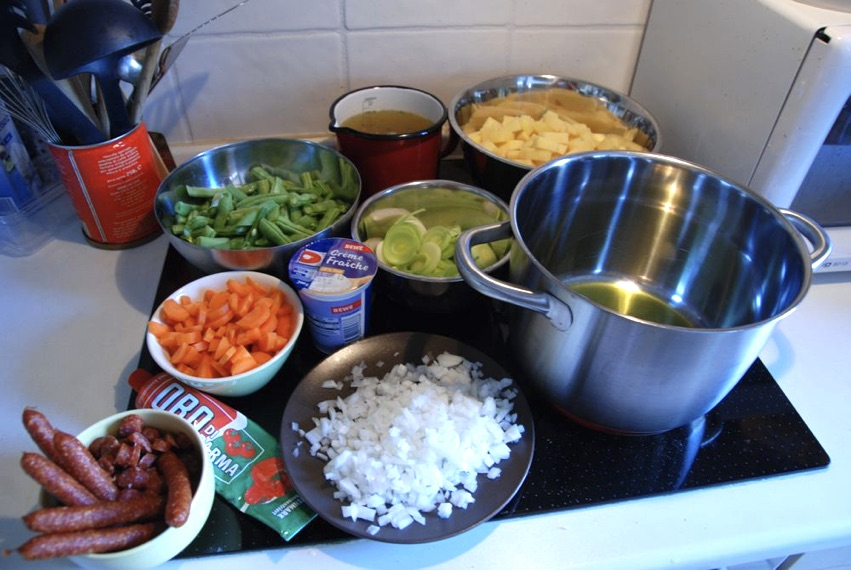
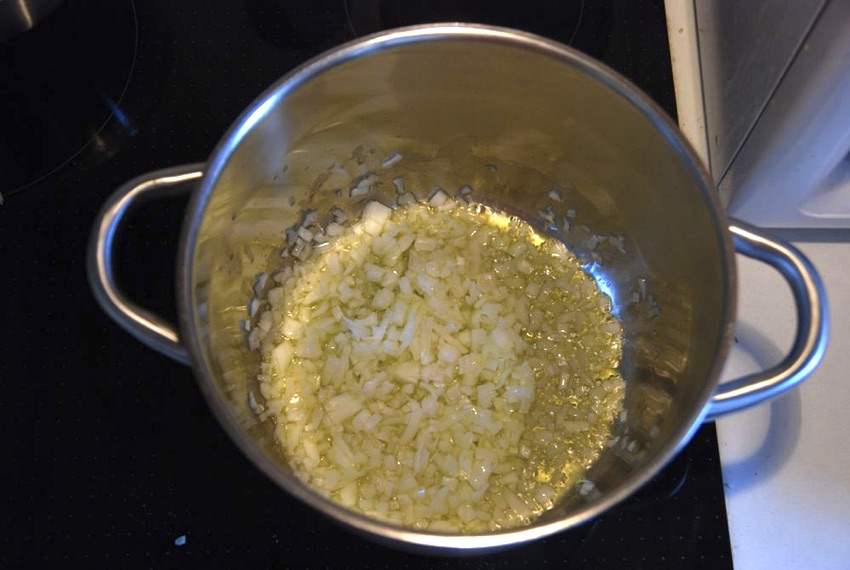
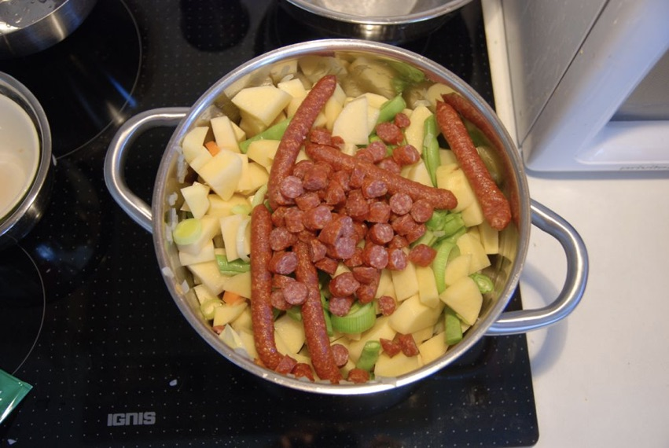
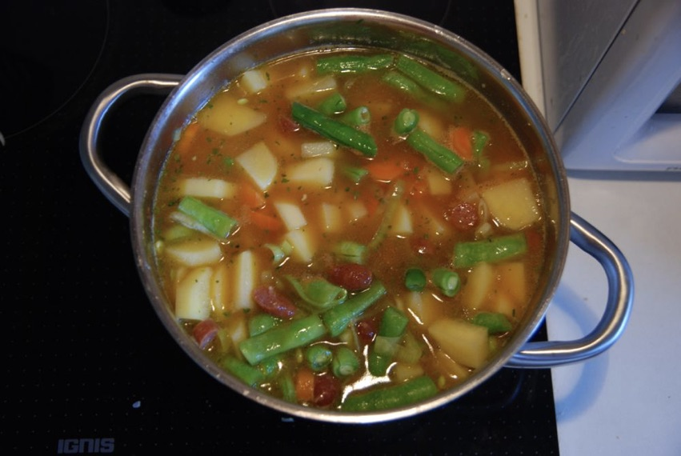
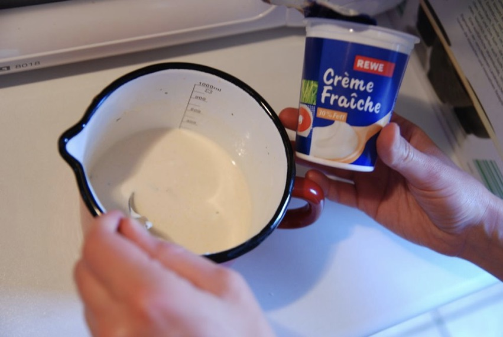
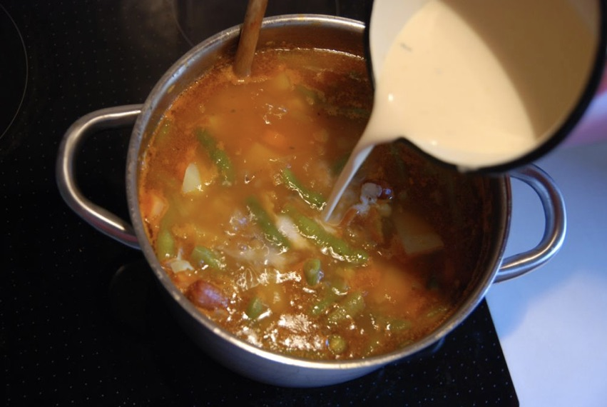

Equipment
- 1 big pot
- a good knife
- a potato peeler
Ingredients for 8 servings
- 1-2 onions
- 500 g Romano beans (green or yellow)
- 1 kg potatoes (firm in cooking – "festkochend")
- 3 carrots
- 1 stick of leek
- 2 sticks of celery
- tomato paste
- olive oil
Optional
- 200 g Crème Fraiche
- 4 sausages, e.g. Debrecziner
- red wine vinegar
Step 1
Wash beans, leek and celery. Peel onions, potatoes and carrots. Cut away ends of beans. Cut all in bite-sized pieces. Cut onions in fine pieces.
Step 2
Steam onions on medium heat in olive oil until soft and opaque.
Step 3
Add leek, celery and carrots and steam on medium heat for another 2-3 minutes. Stir.

Step 4
Add potatoes and beans (and possibly sausages) and steam on medium heat for another 4-5 minutes. Stir.
Step 5
Add water and bring to a boil on full heat. Add approximately 1 table spoon of tomato paste and stir. Put on low heat and let simmer with lid on until beans are cooked (but not too soft). Stir ocasionally.
Step 6
Stir up crème fraiche (so that it flows easily) and pour into a container. Mix it with a bit of soup liquid and stir it up.
Step 7
Pour crème fraiche mixture into soup while stirring. Season soup with salt and pepper until you like the taste. For best taste: let sit for at least 20 minutes.
Step 8
Ready! If you like it a tiny bit sour: add a bit of red wine vinegar to each serving. Serve with warm bread.